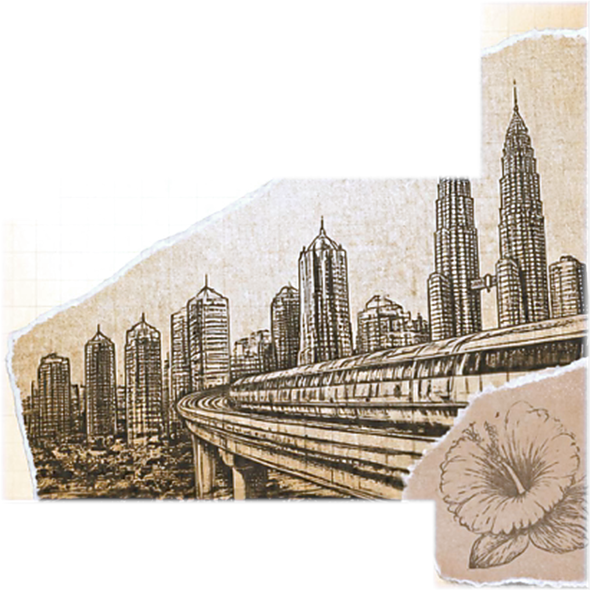
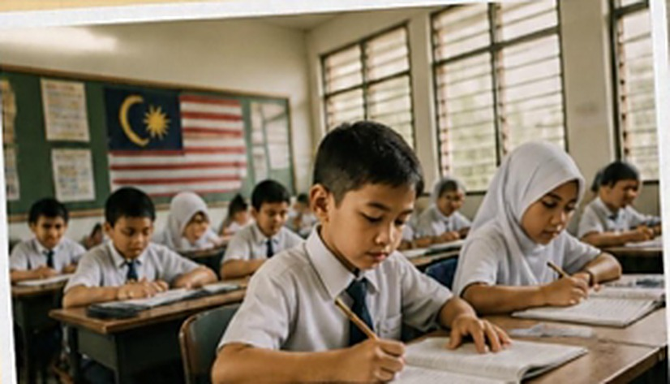
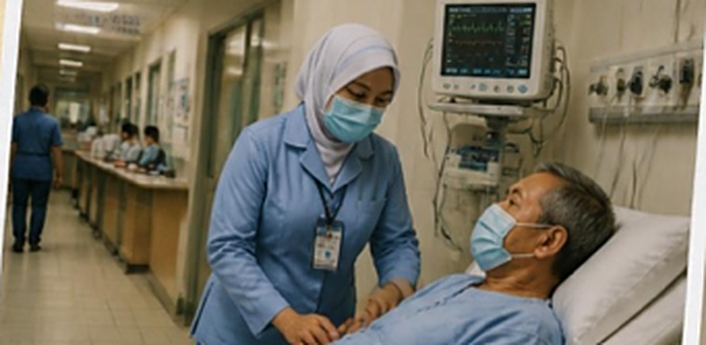
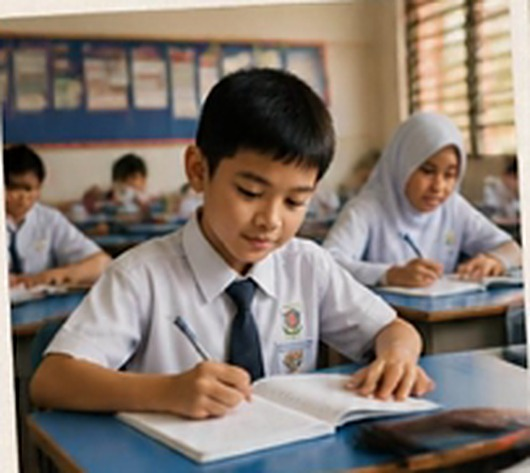
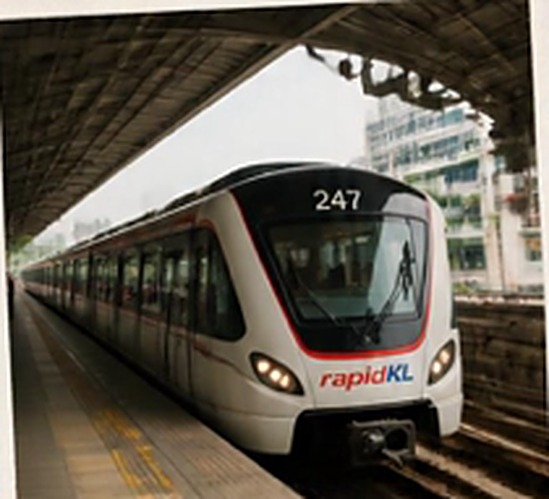
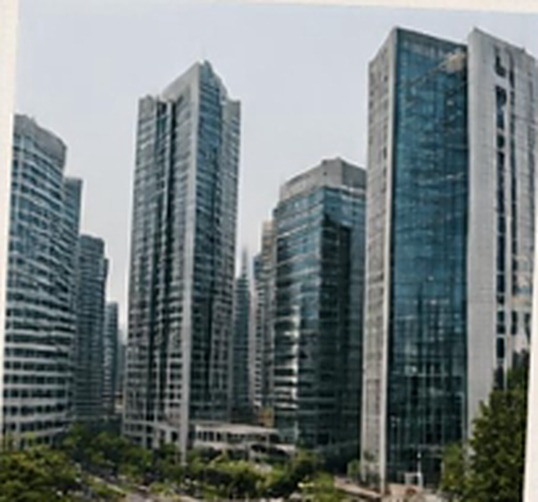

01 / 04
Manfaat
Kemajuan &
Pembangunan
Pembangunan
Hasil daripada kemerdekaan, kita dapat menikmati pelbagai kemajuan dan pembangunan negara.
02 / 04
Hasil Merdeka

PENDIDIKAN

KESIHATAN
Daripada kemudahan pendidikan, perkhidmatan kesihatan ..
03 / 04
HASIL MERDEKA

PENDIDIKAN
KESIHATAN

PENGANGKUTAN

PEKERJAAN
.. jaringan pengangkutan, dan sehinggalah kepada peluang pekerjaan dan juga ekonomi.
04 / 04
PALING BERHARGA
Keamanan
&Kestabilan
&Kestabilan
SELAMAT & HARMONI

Namun, perkara yang paling berharga ialah keamanan dan kestabilan yang membolehkan kita menjalani kehidupan seharian dengan selamat dan harmoni.